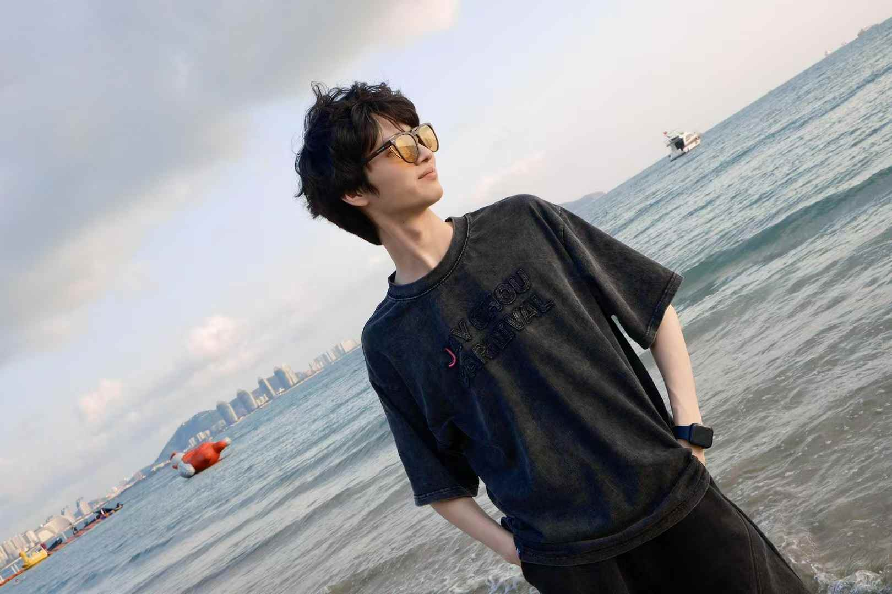
I work in the fields of Multimodal Generation and 3D Vision, supervised by Prof. Li Yuan and Prof. Yonghong Tian at YuanGroup, Peking University. I strive to develop impactful research projects. Now, I focus on the following topics:
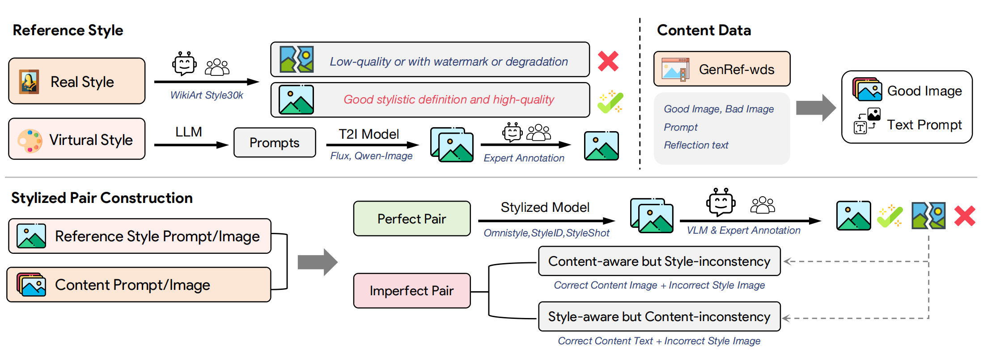
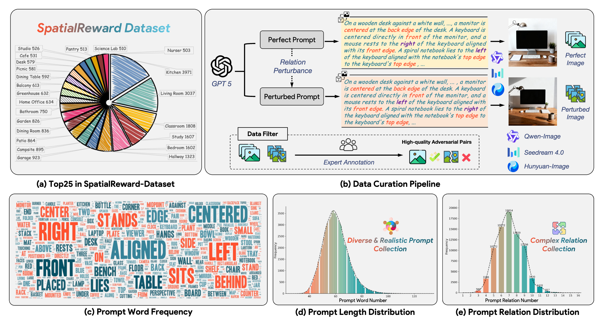
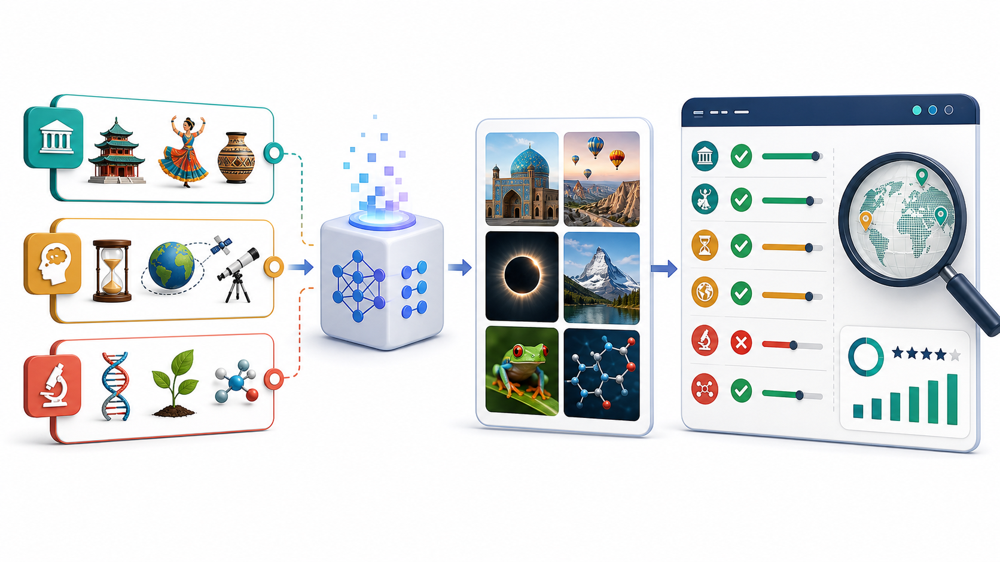
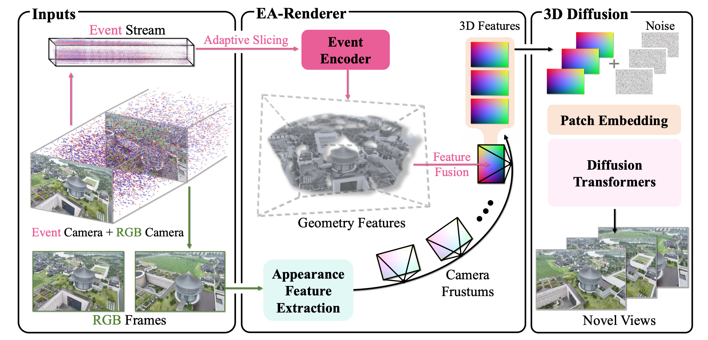
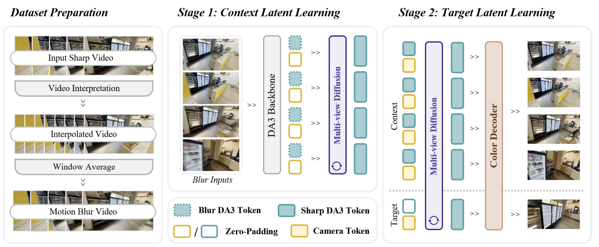
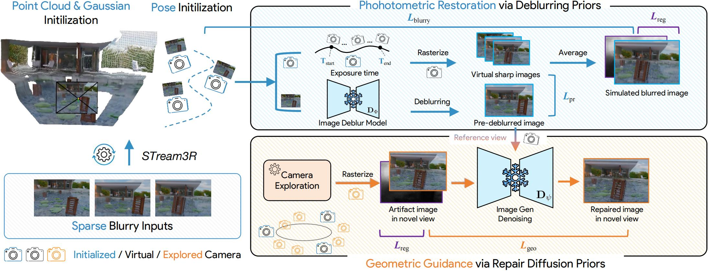
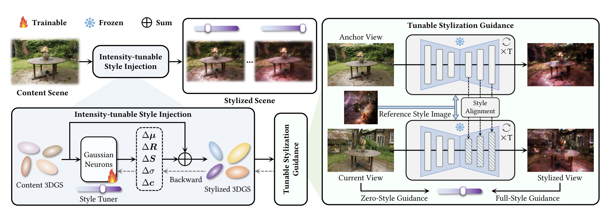
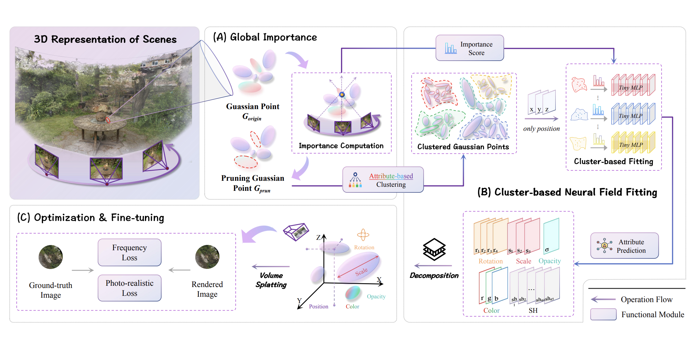
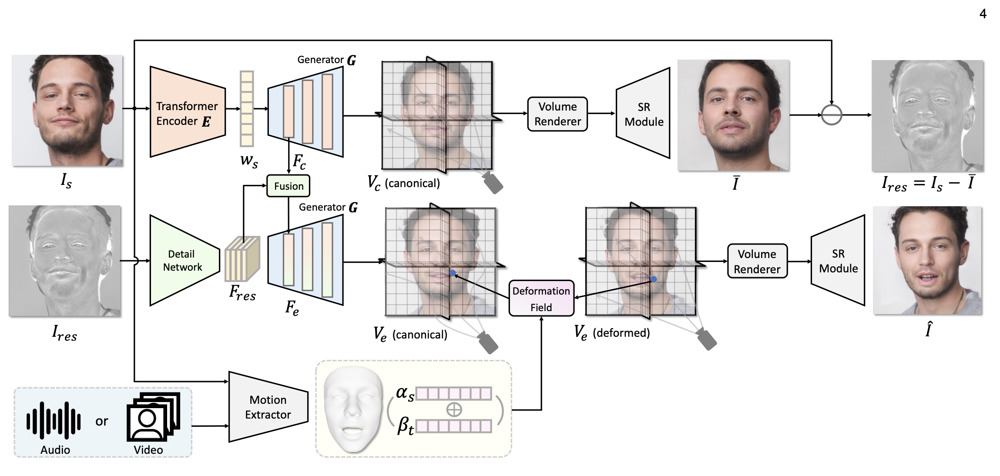
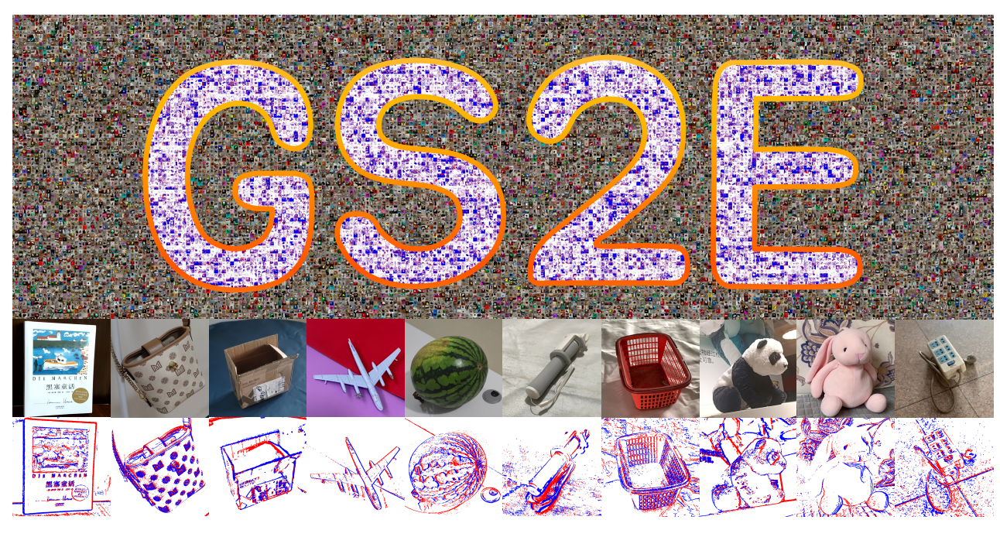
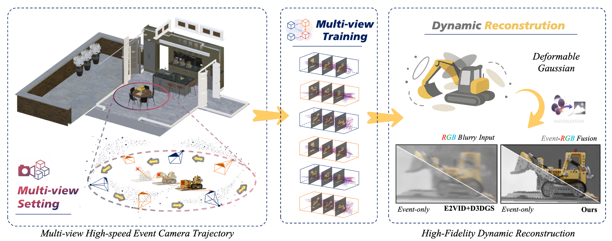
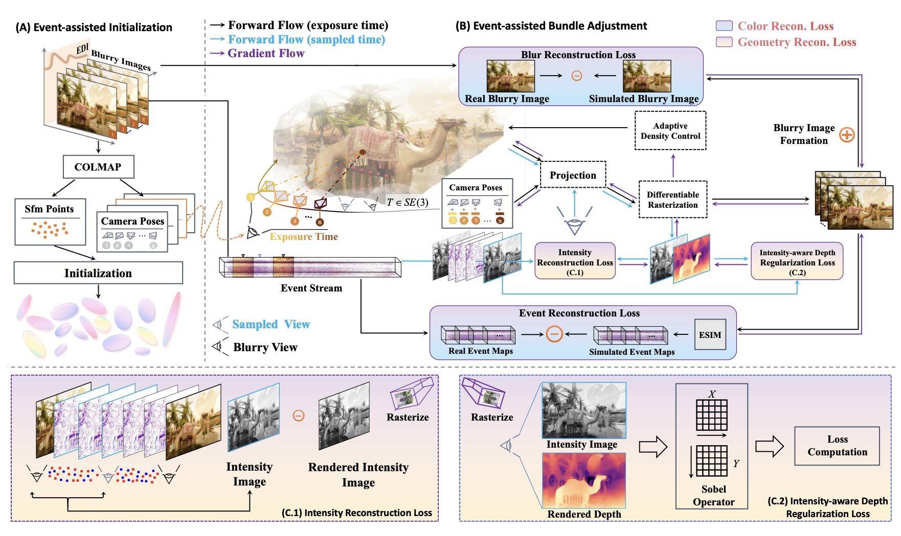
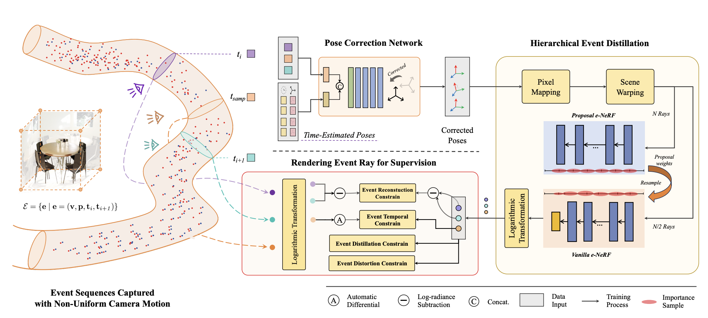
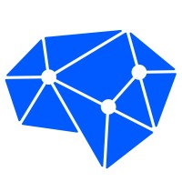
Research Intern, Horizon Robotics
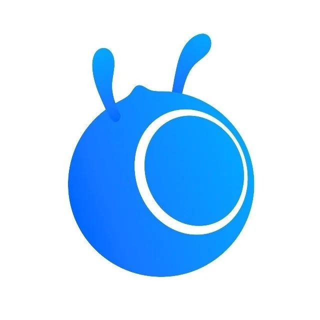